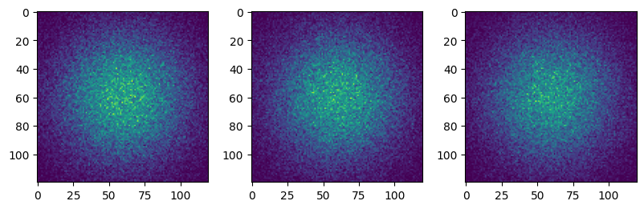
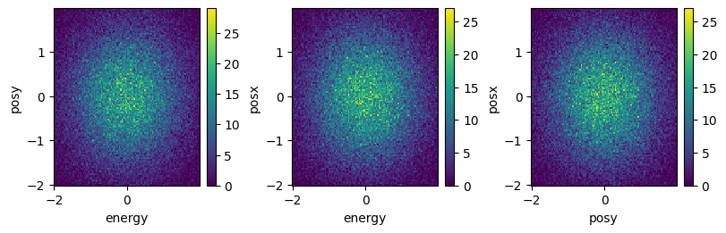

Binning demonstration on locally generated fake data#
In this example, we generate a table with random data simulating a single event dataset. We showcase the binning method, first on a simple single table using the bin_partition method and then in the distributed method bin_dataframe, using daks dataframes. The first method is never really called directly, as it is simply the function called by the bin_dataframe on each partition of the dask dataframe.
[1]:
import sys
import dask
import numpy as np
import pandas as pd
import dask.dataframe
import matplotlib.pyplot as plt
sys.path.append("../")
from sed.binning import bin_partition, bin_dataframe
Generate Fake Data#
[2]:
n_pts = 100000
cols = ["posx", "posy", "energy"]
df = pd.DataFrame(np.random.randn(n_pts, len(cols)), columns=cols)
df
[2]:
| posx | posy | energy | |
|---|---|---|---|
| 0 | -0.268954 | -0.380589 | -0.194257 |
| 1 | -0.166491 | 0.219649 | -1.598014 |
| 2 | 2.028135 | -1.117243 | 0.054602 |
| 3 | 1.778971 | -0.582201 | -0.211374 |
| 4 | -0.620210 | -0.511628 | -0.220653 |
| ... | ... | ... | ... |
| 99995 | 0.153227 | 0.287072 | -1.799589 |
| 99996 | 0.643242 | 1.085360 | 0.558482 |
| 99997 | -2.239366 | 1.157226 | -0.352028 |
| 99998 | 1.666869 | -0.558343 | -0.143787 |
| 99999 | -0.354969 | 0.707457 | 1.119027 |
100000 rows × 3 columns
Define the binning range#
[3]:
binAxes = ["posx", "posy", "energy"]
nBins = [120, 120, 120]
binRanges = [(-2, 2), (-2, 2), (-2, 2)]
coords = {ax: np.linspace(r[0], r[1], n) for ax, r, n in zip(binAxes, binRanges, nBins)}
Compute the binning along the pandas dataframe#
[4]:
%%time
res = bin_partition(
part=df,
bins=nBins,
axes=binAxes,
ranges=binRanges,
hist_mode="numba",
)
CPU times: user 1.31 s, sys: 45.2 ms, total: 1.36 s
Wall time: 1.54 s
[5]:
fig, axs = plt.subplots(1, 3, figsize=(8, 2.5), constrained_layout=True)
for i in range(3):
axs[i].imshow(res.sum(i))

Transform to dask dataframe#
[6]:
ddf = dask.dataframe.from_pandas(df, npartitions=50)
ddf
[6]:
Dask DataFrame Structure:
| posx | posy | energy | |
|---|---|---|---|
| npartitions=50 | |||
| 0 | float64 | float64 | float64 |
| 2000 | ... | ... | ... |
| ... | ... | ... | ... |
| 98000 | ... | ... | ... |
| 99999 | ... | ... | ... |
Dask Name: from_pandas, 1 graph layer
Compute distributed binning on the partitioned dask dataframe#
In this example, the small dataset does not give significant improvement over the pandas implementation, at least using this number of partitions. A single partition would be faster (you can try…) but we use multiple for demonstration purposes.
[7]:
%%time
res = bin_dataframe(
df=ddf,
bins=nBins,
axes=binAxes,
ranges=binRanges,
hist_mode="numba",
)
CPU times: user 417 ms, sys: 595 ms, total: 1.01 s
Wall time: 563 ms
[8]:
fig, axs = plt.subplots(1, 3, figsize=(8, 2.5), constrained_layout=True)
for dim, ax in zip(binAxes, axs):
res.sum(dim).plot(ax=ax)

[ ]: